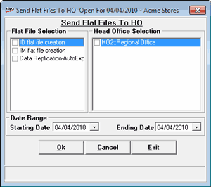

In a chain store scenario, you can send different files required for consolidation and analysis purpose at the Head Office, as a part of the day end process. However, this option is an additional facility for sending the selective files pertaining to a period.
How to reach: Housekeeping > POS-HO Synchronisation > Send Flat Files to HO
The Send Flat Files to HO window is displayed as shown.

Flat File Selection: Displays the list of various flat files created in Shoper 9. Check the box against the file to be sent to HO.
Head Office Selection: Displays the lists of HO(s) configured as Shoper Ver 7.2 or lower. You can select one or more HO(s) to which the selected files are to be sent.
Date Range: Select the required period for which the data is to be included in the selected files.
Starting Date: Select the starting date of the period
Ending Date: Select the ending date of the period. This date should not be greater than or equal to the Shoper date.